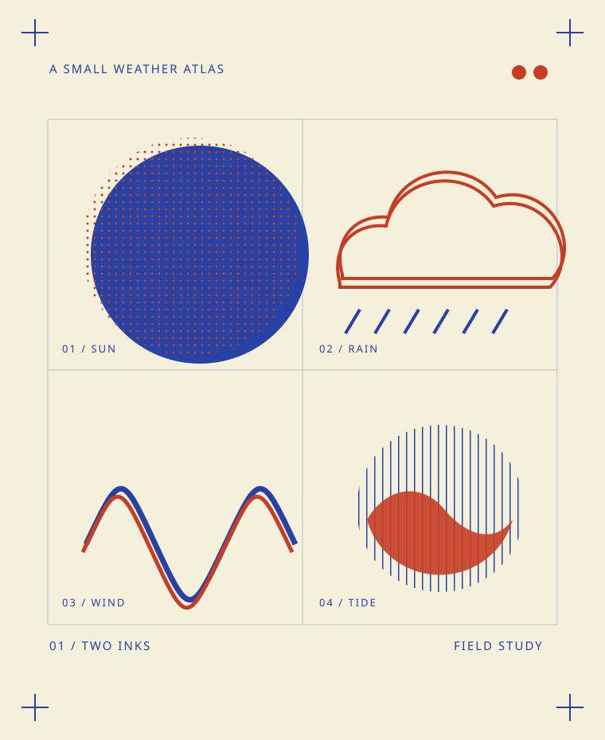

How many?
A stack for your shop, a run for a fair, or enough to send a little further. Enter a whole number from 60 to 2,000.
THE RUNRISOGRAPH PRINT STUDIO
Put a number to the next thing you make. Price a run of 60–2,000 copies in one, two or three inks.
Estimate your editionA clear starting figure. Artwork comes next.

60–2,000 copies
1–3 colors
Two paper choices
Start with the edition you have in mind. You can change any choice before preparing your estimate.
A stack for your shop, a run for a fair, or enough to send a little further. Enter a whole number from 60 to 2,000.
THE RUNGive each chosen color a job. Try one for a direct mark, two for an overlap, or three for a separate accent.
Standard keeps the rate lower. Heavy adds 10¢ to each copy. Choose for the piece you want someone to hold.
STANDARD / HEAVYTHE EXAMPLE EDITION
The atlas example uses heavy stock. Its estimate includes the studio fee, two color setups and the full print run.
Open this edition at the estimate deskA small weather atlas USD
Estimate only; confirm the artwork before printing.